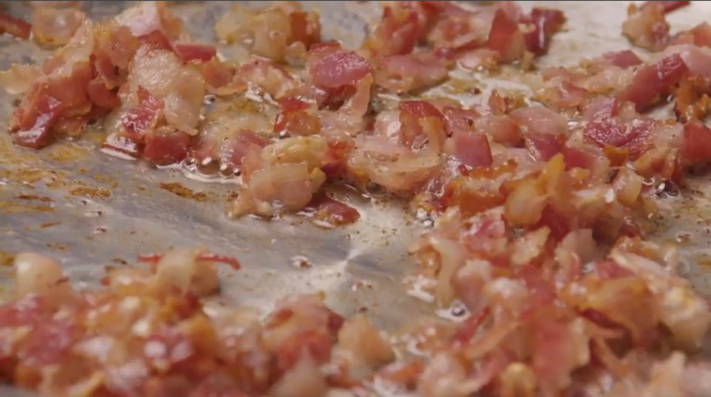
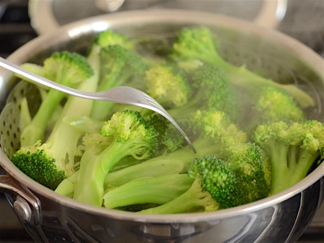
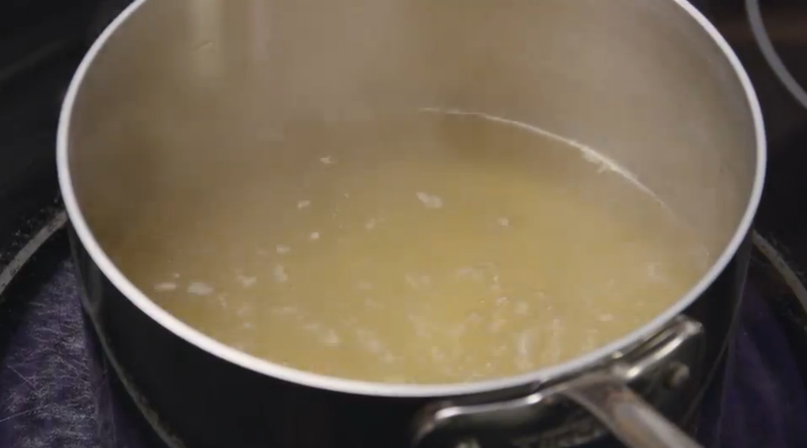
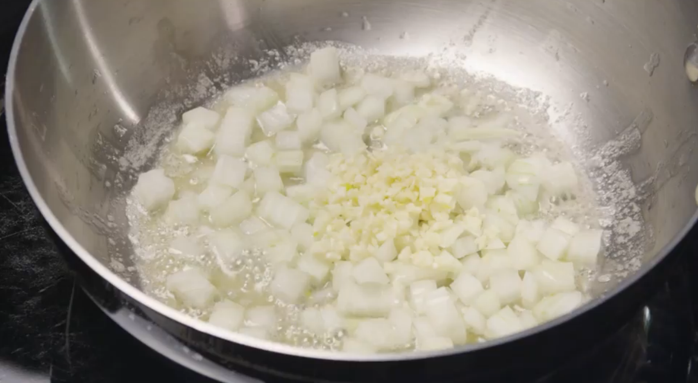
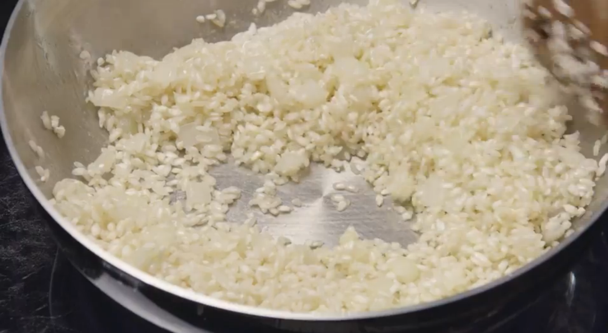
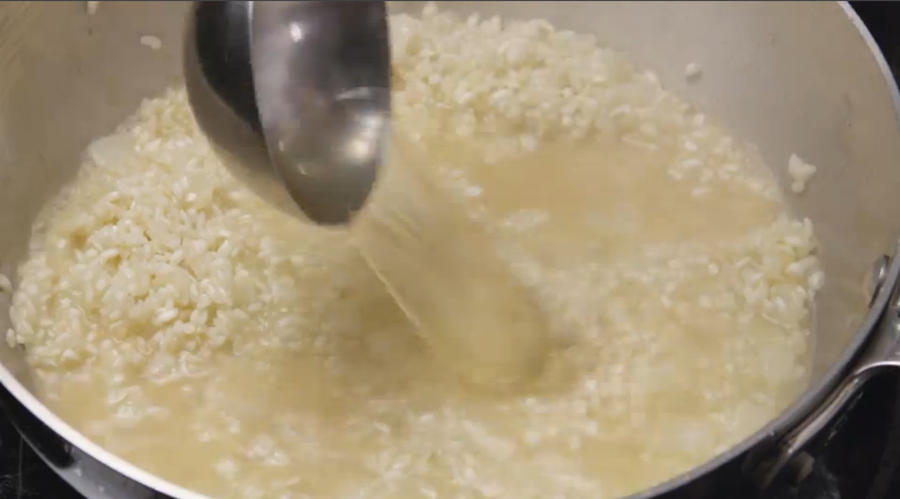
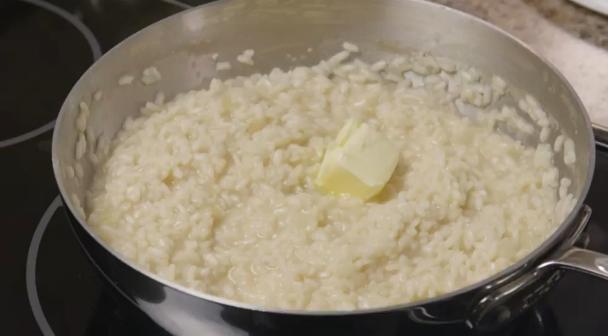
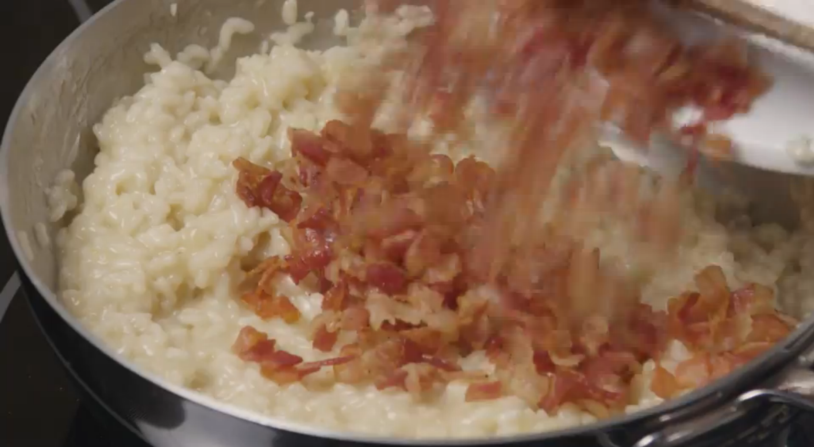
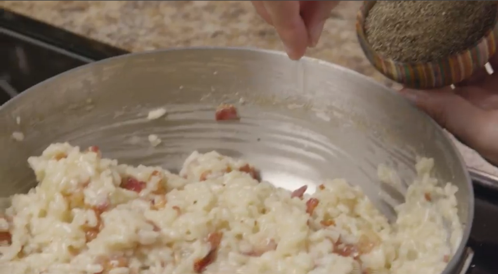

Ingredients
- 1/2 pound bacon, diced
- 5 cups chicken stock
- 2 tablespoons butter
- 1/2 onion, diced
- 4 cloves garlic, minced
- 1 1/2 cups Arborio rice
- 2 tablespoons butter
- 1/4 cup grated Parmesan cheese
- salt and black pepper to taste
- 1 head broccoli
Directions
- Cook and stir the diced bacon in a large skillet over medium heat until browned, about 10 minutes. Drain the bacon and reserve.
- Steam broccoli in a pot.
- Bring the chicken stock to a boil in a saucepan over high heat; reduce heat to low to keep the chicken stock hot.
- Heat 2 tablespoons butter in a large, heavy-bottomed saucepan over medium-high heat. Add the onion and garlic; cook and stir until the onion begins to turn golden brown at the edges, about 2 minutes.
- Pour in the rice and stir until the rice is coated in butter and has started to toast, 2 to 3 minutes.
- Reduce heat to medium; stir in 1/3 of the chicken stock and continue stirring until the rice has absorbed the liquid and turned creamy. Repeat this process twice more. It should take about 20 minutes. When finished, the rice should be tender, yet slightly firm.
- Remove the risotto from the heat and stir in the remaining 2 tablespoons of butter.
- Stir in the Parmesan cheese, and the reserved bacon and broccoli.
- Season to taste with salt and pepper before serving. Enjoy!

1

2

3

4

5

6

7

8

3